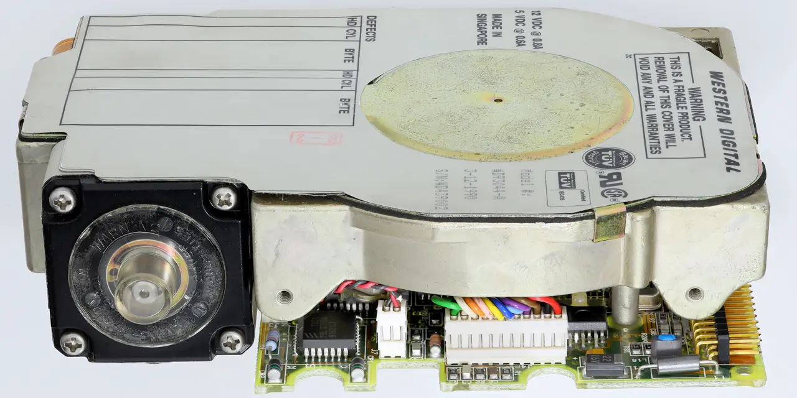

AI 투자는 GPU와 전력 이야기로 시작하지만, 실제 운영 단계에서는 저장장치가 조용히 커집니다. 학습 데이터, 추론 로그, 모델 버전, 고객 데이터, 백업이 쌓이면 데이터센터는 더 많은 저장 용량을 요구합니다. 웨스턴 디지털 주주가 궁금해해야 할 질문은 “AI가 좋습니까”가 아니라 “그 데이터가 어떤 저장장치 가격으로 들어옵니까”입니다.
WDC는 낸드와 HDD를 함께 봐야 했던 회사였지만, 투자 관점은 점점 고용량 HDD와 데이터센터 저장 수요로 좁혀지고 있습니다. 특히 AI 데이터센터가 실시간 처리만 하는 것이 아니라 방대한 데이터를 장기간 보관해야 한다면, 고용량 HDD의 경제성은 다시 중요해집니다.
웨스턴 디지털의 최근 실적 발표에서 봐야 할 것은 매출 한 줄보다 가격과 제품 믹스입니다. HDD 공급이 부족하다는 말이 실제 평균판매단가와 계약 조건 개선으로 이어지는지 확인해야 합니다.
AI는 계산만큼 저장도 먹습니다

저장장치 시장은 과거에 잦은 공급 과잉으로 투자자를 괴롭혔습니다. 수요가 좋아 보여도 기업들이 증설하면 가격은 빠르게 무너졌습니다. 이번 사이클의 차이는 고용량 HDD 공급이 단기간에 크게 늘기 어렵고, 클라우드 고객이 장기 용량 확보를 원한다는 점입니다.
WDC의 핵심은 단순 출하량이 아니라 테라바이트당 수익성입니다. 더 큰 용량의 드라이브가 팔리고, 고객이 장기 공급을 원하며, 재고가 낮게 유지되면 마진은 개선될 수 있습니다. 반대로 고객이 주문을 미루거나 가격 협상을 강하게 하면 공급 부족 스토리는 빠르게 약해집니다.
AI 저장 수요는 화려하지 않지만 오래갑니다. 모델이 커지고 사용자가 늘수록 데이터는 줄어들지 않습니다. 다만 모든 데이터가 고성능 SSD로 가는 것은 아닙니다. 뜨거운 데이터와 차가운 데이터가 나뉘고, 장기 보관에는 HDD가 여전히 비용 우위를 갖습니다.
씨게이트와 함께 보는 가격 사이클입니다
관련 영상
AI Storage Need Fuels Hard Drive Demand
웨스턴 디지털을 볼 때 씨게이트를 함께 봐야 합니다. 두 회사는 HDD 공급의 핵심 축입니다. 한 회사의 실적만으로 시장 전체를 판단하기 어렵습니다. 씨게이트가 고용량 HDD 예약과 가격에 대해 강한 신호를 주고, WDC도 같은 방향을 보이면 사이클의 신뢰도는 높아집니다.
샌디스크와 마이크론은 플래시 저장장치와 메모리 사이클을 확인하는 비교 대상입니다. AI 서버에는 HDD만 들어가지 않습니다. 고성능 SSD와 HBM, DRAM, 네트워크 저장장치가 함께 필요합니다. WDC의 강점이 HDD 쪽에 있어도 전체 저장 생태계의 가격 흐름을 봐야 합니다.
스토리지 사이클의 함정은 고객 주문이 한 번에 크게 들어오다가 갑자기 쉬는 것입니다. 클라우드 고객은 장기 수요가 있어도 분기별 예산과 재고 상황에 따라 주문을 조절합니다. WDC의 매출이 좋아도 고객 집중과 계약 기간을 확인해야 하는 이유입니다.
분리 이후 자본 배분이 더 선명해져야 합니다
WDC 투자에서 중요한 변화는 사업 구조가 더 단순해지는 방향입니다. 플래시와 HDD를 한 회사 안에서 보는 동안 투자자는 어떤 사업이 현금을 만들고 어떤 사업이 투자를 요구하는지 구분하기 어려웠습니다. 구조가 단순해질수록 시장은 HDD 사업의 현금흐름을 더 직접적으로 평가합니다.
단순한 구조는 장점이지만 방어막도 줄입니다. HDD 사이클이 좋을 때는 강하게 보이지만, 고객 주문이 쉬면 실적 변동성이 그대로 드러납니다. 그래서 자본 배분이 중요합니다. 회사가 좋은 사이클에서 부채를 줄이고, 무리한 증설을 피하며, 주주환원을 균형 있게 가져가는지 봐야 합니다.
저장장치 기업은 기술 전환도 놓치면 안 됩니다. HAMR, 고용량 플래터, 에너지 효율, 데이터센터 랙 밀도 같은 기술 요소가 고객 채택을 결정합니다. 가격만 보고 투자하면 다음 세대 제품 전환에서 실망할 수 있습니다.
WDC는 공급 부족보다 현금흐름 지속성이 중요합니다
WDC의 좋은 시나리오는 고용량 HDD 공급 부족이 가격 상승으로 이어지고, 클라우드 고객 계약이 길어지며, 잉여현금흐름이 뚜렷하게 개선되는 경우입니다. 이때 회사는 AI 인프라의 뒤편에서 조용히 높은 수익성을 만들 수 있습니다.
나쁜 시나리오는 고객 주문이 일시적으로 몰린 뒤 재고 조정에 들어가고, 가격이 흔들리며, 설비투자 부담이 커지는 경우입니다. 저장장치 업종은 과거에도 좋은 사이클 뒤에 공급 과잉이 자주 왔습니다. 이번에는 다르다고 말하려면 재고와 계약이 숫자로 보여야 합니다.
따라서 웨스턴 디지털을 볼 때는 HDD 평균판매단가, 고용량 제품 비중, 클라우드 고객 주문, 재고일수, 잉여현금흐름, 부채 축소를 함께 봐야 합니다. AI 저장 수요는 진짜일 수 있지만, 주가를 오래 지키는 것은 수요가 아니라 가격 discipline입니다.
웨스턴 디지털의 흥미로운 점은 시장이 다시 HDD의 경제성을 말하기 시작했다는 점입니다. 몇 년 전만 해도 저장장치 투자의 중심은 SSD와 낸드 가격이었습니다. 이제 AI 데이터센터는 빠른 저장장치와 느리지만 큰 저장장치를 동시에 필요로 합니다. 이 조합에서 HDD는 비용 효율의 자리를 되찾고 있습니다.
클라우드 고객의 구매 방식도 봐야 합니다. 대형 고객은 단기 가격보다 장기 공급 안정성을 중시할 수 있습니다. 하지만 장기 계약은 공급자에게도 의무가 됩니다. 가격이 좋아 보여도 계약 조건이 고객에게 유리하면 마진은 기대보다 낮을 수 있습니다.
플래시 사업과의 분리 이후 WDC는 투자자가 더 선명하게 볼 수 있는 회사가 됩니다. 단순해진 회사는 장점이 있지만 변명도 줄어듭니다. HDD 사이클이 좋으면 더 직접적으로 평가받고, 나쁘면 더 직접적으로 흔들립니다. 구조 단순화는 양날의 검입니다.
기술 측면에서는 용량 증가와 전력 효율이 중요합니다. 데이터센터는 랙 공간과 전력 비용을 매우 민감하게 봅니다. 더 많은 데이터를 같은 공간과 전력으로 저장할 수 있으면 고객은 프리미엄을 지불할 이유가 생깁니다. 단순 용량 경쟁이 아니라 총소유비용 경쟁입니다.
따라서 WDC 주주는 클라우드 주문, 고용량 HDD 평균판매단가, 재고일수, 영업현금흐름, 부채, 제품 로드맵을 함께 확인해야 합니다. AI 저장 수요가 구조적이라는 판단은 이 숫자들이 여러 분기 반복될 때만 강해집니다.